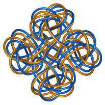

The page of the Knot Theory Group at the Univ. of Liverpool.
 An introduction to knot theory which seems to be aimed at teachers of mathematics can be found at Los Alamos National Laboratory.
There is also another knot theory page at the University of British Columbia.
Another page, developed from a course for liberal arts students, is at York Univ.
A discussion, and several lists, concerning the classification of knots, may be found in Charilaos Aneziris' home page.
This table of knots up to nine crossings came from Sean Collom's home page at Oxford.
A collection of pages on Mathematics and Knots at the University of Wales.
A huge page of links to pages on knots and knot theory of all kinds.
An on knot theory appears in the November 1997 issue of American Scientist.
A page at the Univ. of Liverpool for accessing preprints on knot theory.
Berkeley's Topology gopher archive contains, among other things, Joyce Riley's bibliography of reviews in knot theory (up to about 1990) from Math Reviews.
A catalog of energy-minimizing configurations of knots, at UMass.
Since I couldn't find them, I took the SnapPea files for the knots with up to
11 crossings that Joe Christy had with his version of snappea on the NeXT, and
had SnapPea2.0 convert them to the new file format. They live in two files,
one for knots up to 10 crossings and one for 11 crossing knots. For up to
10 crossings, you can pull the file across as a
BinHexed Stuffit archive (108K)
(let me know if it works now). For 11 crossings,
you can also get the BinHexed Stuffit archive.
I've found these files to be
the best way to figure out what the knot I've drawn is. I ask
SnapPea what the volume of the one I've drawn is, and compare the number with
this list of the (hyperbolic) knots up to
11 crossings listed in order of increasing volume. (The list came from Joe's
version of snappea; thanks to Irena Swanson for telling me that the Unix `sort'
command could sort the second word in a line!). If all you want are
the knots and volumes, this Dvi file (or
this Postscript file) is easier to work with.
I've now also added zip archives for the knots up to 10 crossings, as well as the 11-crossing knots. These files have been converted from Mac-readable to PC-readable form (thanks to Conversions Plus, so that they can be read into A.C.Manoharan's port of SnapPea to Win95/NT. The port seems stable; so far, I've only crashed it by trying to read in a Mac-readable knot file (hence the conversion...)!
These files came in handy while exploring what knots a construction (with Rachel Roberts) of persistent laminations worked for; read more about it in my paper descriptions.
The program Knot Theory by Computer, for the Mac, developed by M. Ochiai and S. Yamada.
ftp://chs.cusd.claremont.edu/pub/knot
BACK TO main page .
{kind=link}